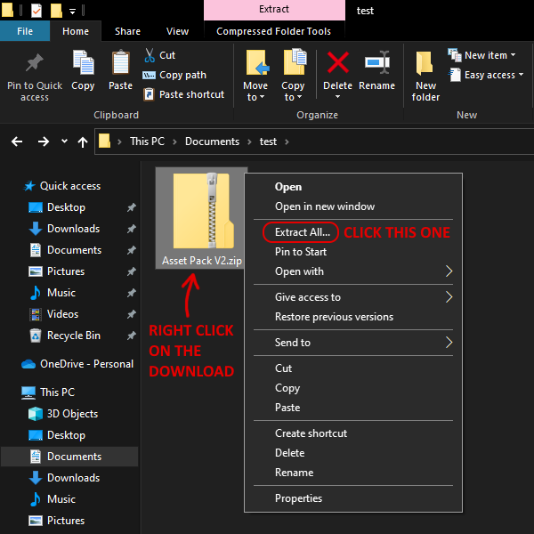
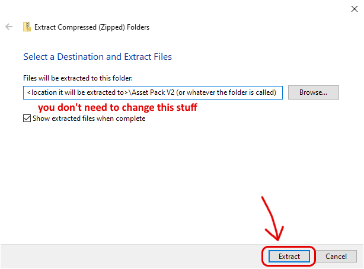
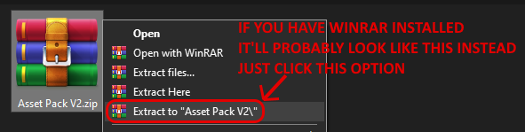

The Unofficial Homestuck Collection and the Asset Pack V2 are usually provided as a .ZIP download. To use them, you will need to EXTRACT the files. Here's a quick tutorial for Windows:


Depending on your hardware, the extraction may take some time!
You may have programs like WinRAR or 7-Zip installed that may alter the options to EXTRACT the .ZIP. For example:
